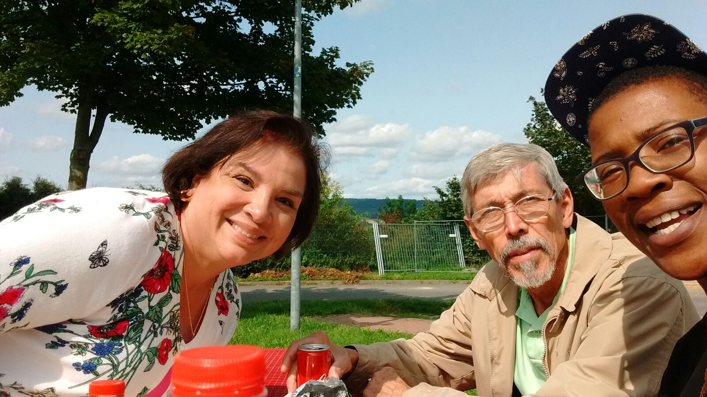

Me and a few friends were asked to pose for SHOUT.
Tag captured insights into the lives of LGBTQ+ identifying womxn from across the region through a series of one on one portrait sessions with the artist.
Every year my friend Olga has a Polish Christmas, we all get together and celebrate Christmas Polish Style!
I met these 2 amazing people when I went to Brussels. I like travelling and tend to go on my own,
you get to meet great people like Beverly and Jim!
They lived in Sacremnto and were visiting their daughter, I was on my way to Amsterdam after spending 5 nights in Brussels
Brussels is home of one of the most dissapointing statues Le Manneken Pis.